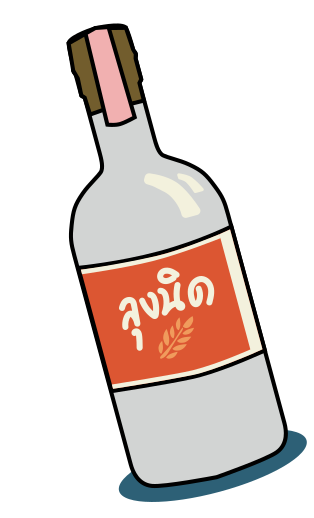
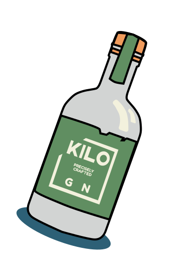
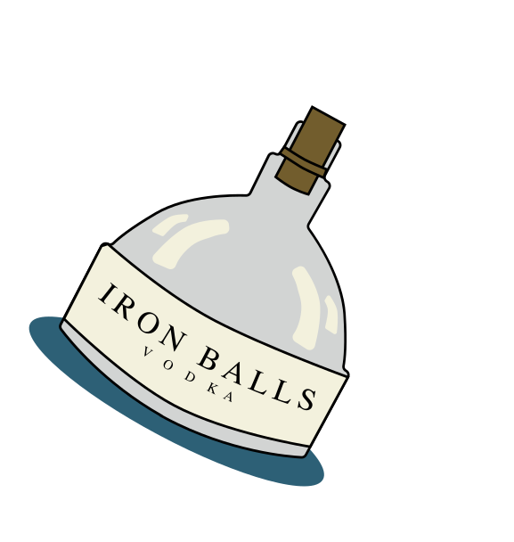
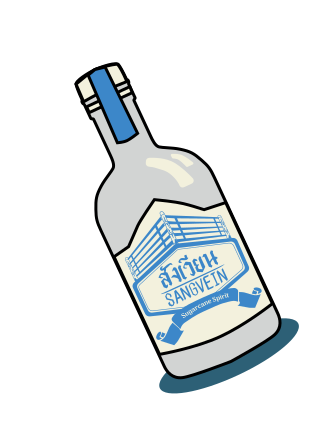
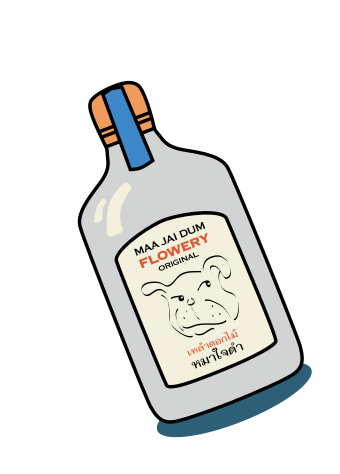
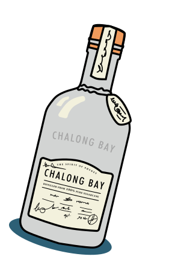
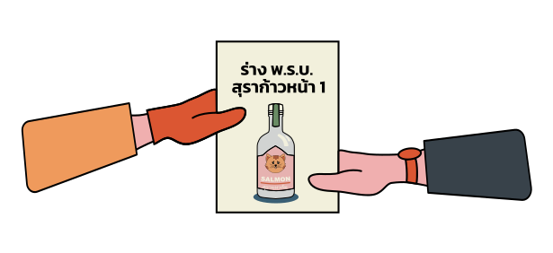
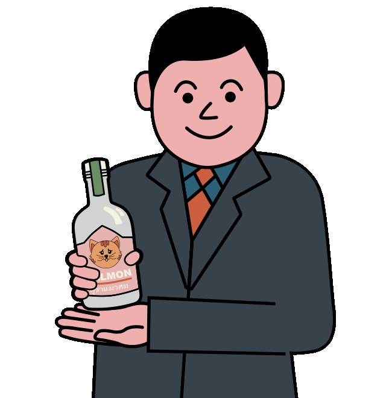
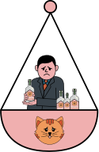

พระราชบัญญัติ
สุราก้าวหน้าไปถึงไหนแล้ว?
     
9 ก.พ. 65

สภาผู้แทนราษฎรได้มีการพิจารณาในวาระรับหลักการของร่าง พ.ร.บ.สุราก้าวหน้า ครั้งแรกในสภา
ได้มีมติให้คณะรัฐมนตรี (ครม.) นำร่างพ.ร.บ.สุราก้าวหน้า ไปพิจารณา ก่อนรับหลักการ เป็นเวลา 60 วัน
ผู้ลงมติทั้งหมด 407 เสียง เห็นด้วย 207 ไม่เห็นด้วย 195 งดออกเสียง 2 ไม่ลงคะแนน 3
7 มิ.ย. 65

ที่ประชุมสภาผู้แทนราษฎร พิจารณา วาระแรก ร่าง พ.ร.บ.สุราก้าวหน้า เสนอโดย นายเท่าพิภพ พรรคก้าวไกล
จำนวนผู้เข้าร่วมประชุม 331 คน เห็นด้วย 178 ไม่เห็นด้วย 138 งดออกเสียง 15 ไม่ลงคะแนน 0
สภาฯ รับหลักการร่างพ.ร.บ.สุราก้าวหน้า ตั้งกมธ.วิสามัญ แปรญัตติ 7 วัน
25 ต.ค. 65

มีข่าวลือว่าคณะรัฐมนตรี (ครม.) พยายามล้มโหวตคว่ำ กฎหมายสุราก้าวหน้า ระหว่างการพิจารณาวาระ 2 และ 3
“รัฐบาลพล.อ.ประยุทธ์ คำนึงถึง ผลประโยชน์ของปชช. มากกว่า ผลแพ้ชนะทางการเมือง”รองโฆษกรัฐบาลกล่าว
รอลุ้นว่าในวันที่ 2 พฤศจิกายน ร่าง พ.ร.บ.สุราก้าวหน้า จะมีอนาคต อย่างไรในรัฐสภา
1 พ.ย. 65
รัฐบาลแก้เกมชิงออกกฎกระทรวงปลดล็อกผลิตสุรา ปาดหน้ากฎหมาย ‘สุราก้าวหน้า’
‘รองนายกฯ วิษณุ’ เผย หากร่างของก้าวไกลไม่ผ่านสภา ก็ไม่จำเป็นเพราะกฎกระทรวงดีเท่าเทียม
สนับสนุน
เพื่อ
โดย
สนับสนุน
ประชาชน
ประชาชน